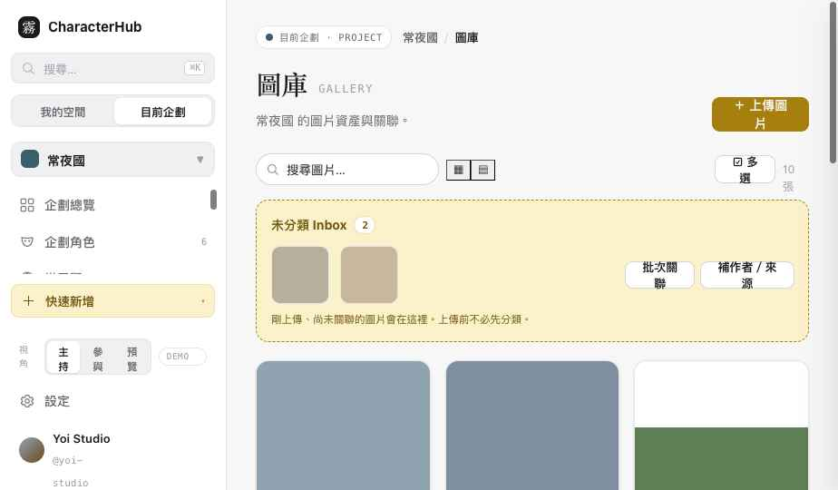
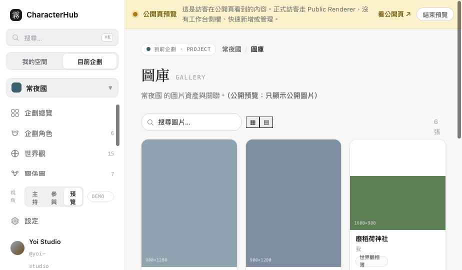

圖庫完成。Asset（檔案＋自身 metadata）與 AssetLink（與內容的關聯）嚴格分離；未分類 Inbox、上傳 Queue、圖片詳情、Lightbox、批次整理、公開裁切、動作權限、A11y 齊備。
切側欄左下「視角」看 主持／參與／公開預覽 差異。上傳按鈕開啟 Demo 上傳 Queue。


不把完整圖片 metadata 複製到每個 Character／WorldEntry／Story——它們只持有 AssetLink，指回同一個 Asset。範例：宵霧正面立繪同時是 宵霧 的 avatar＋gallery，也是 守燈人記 的 cover（同一 Asset、三筆 Link）。
公開 Gallery 顯示圖片需同時滿足：Asset 可公開 ∧ AssetLink 可公開 ∧ target entity 可公開，且僅 ready 狀態。私人圖片即使被公開角色引用也不顯示（已驗證：灰的私人草稿在公開預覽隱藏；10→6）。公開頁不顯示：私人備註、原始儲存 key、uploader 內部資訊、未完成／failed 檔案、未授權來源；作者與來源依設定顯示，不省略為無署名。
| 動作 | Owner/Host | Member（本原型政策） | Visitor 預覽 |
|---|---|---|---|
| asset:upload / update | ✓ | ✓（自己的） | ✕ |
| asset:archive / delete | ✓ | ✕（不可刪他人原始 Asset） | ✕ |
| assetLink:create / update / delete | ✓ | ✓（自己角色的關聯） | ✕ |
| gallery:manage | ✓ | ✕ | ✕ |
角色擁有者可管理自己角色的 AssetLink，不代表可刪除別人上傳／擁有的原始 Asset。權限依動作概念，不依 fixture 角色名寫死。
≥1200px 篩選側欄＋網格＋詳情面板；768–1199px 網格＋詳情 Drawer（側欄收起）；<768px 2 欄網格、全螢幕 Lightbox、詳情滿版。圖片保留比例（aspect-ratio，不固定高度裁切）。A11y：Alt Text 欄位、圖卡鍵盤 Focus＋Enter、Lightbox Esc 關閉＋Focus Trap＋左右鍵切換、處理狀態用文字＋字形非僅顏色、上傳進度 aria-live、prefers-reduced-motion。請在實機 360／390／768／1024／1440px 確認。
| 檔案 | 變更 |
|---|---|
| assets/data.js | Asset／AssetLink fixtures（含未分類、failed、他人擁有、多重關聯）＋helper（assetsOf/linksForAsset/assetsForTarget/unclassifiedAssets/isTargetPublic…）；ACTION_GRANTS 補 asset/assetLink/gallery 動作。 |
| assets/gallery.css | 篩選側欄、網格／瀑布流、圖卡、狀態徽章、詳情 Drawer、Lightbox、上傳 Queue、批次列、響應式、reduced-motion。 |
| pages/gallery.html | 圖庫頁：Inbox、上傳 Queue、詳情、Lightbox、多選批次、公開裁切、動作權限、A11y。 |
| index.html | 圖庫標記為已重設計，加 Slice 4B 報告連結。 |
| 項目 | 作法 |
|---|---|
| 我的素材庫 vs 企劃圖庫 | Account Scope（我的素材庫）＝使用者擁有的全部 Asset（含未加入任何企劃、跨企劃重用）；Project Scope（企劃圖庫）＝經 AssetLink 關聯到該企劃內容的圖。Asset 由帳號擁有，不因出現在某 Project Gallery 而變成 Project-owned。 |
| Scope Gap · 未關聯圖的企劃歸屬 | 未關聯到 Character／WorldEntry／Story 的圖，用顯式 project-level Link歸屬企劃 Inbox：AssetLink{targetType:'project', targetId:projectId, role:'inbox'}（未來可為 ProjectAssetInboxItem）——不靠前端目前頁面判斷歸屬。 |
| 技術狀態 vs 分類狀態 | processingStatus（queued/uploading/processing/ready/failed）與 classificationStatus（unclassified/organized）分開。一張圖可以是 ready + unclassified。 |
| AssetLink visibility | inherit / private / members / public（inherit 跟 Asset 本身）。公開有效可見：Asset 可見 ∧ Link 有效可見 ∧ Target 可見 ∧ 已發布頁面。QA 可記 10→6，但公開 UI 不顯示隱藏圖總數也不洩存在。 |
| role 約束 | 單一 role（avatar / cover）：同一 target 同一 role 只一筆有效 Link，換圖走取代流程。多筆 role（gallery/reference/illustration/event_image/relationship_album/world_entry_album）：sortOrder 排序範圍為 targetType + targetId + role。 |
| 生命週期四層 | 從此內容移除（刪 content Link）· 從企劃圖庫移除（刪 project-level Link）· 封存（保留復原與歷史引用）· 永久刪除（列出所有引用、需 Asset Owner 權限，不等同 gallery:manage）。主持人可管 Link，但不能永久刪除他人擁有的原始 Asset。 |
| Attribution 狀態 | Creator／Uploader／Owner 維持分離；attributionStatus：complete / incomplete / not_required（本人創作或無公開網址的委託不強制）。License：copyright / commissioned / permission_granted / creative_commons / public_domain / custom / unknown。缺 attribution 顯示提醒，不完全阻擋上傳。 |
| processingStatus ownership | 為系統／上傳管線控制，非一般使用者可直接編輯的 metadata。UI 只提供：取消／重試／查看失敗原因。 |
Slice 4B 完成，先停（不進 Inspiration）。等你驗收。
維持單一 OCData、Demo interaction only，未建立 Repository／API／R2／Auth／第二套 Store。